Grip op je geld,
zonder spreadsheet-goeroe te zijn.
FBS, het Financieel Beheer Systeem, is een Nederlandstalig programma voor je eigen financiën. Je leest je bankafschriften in, en FBS maakt daar een overzicht van. Alles blijft op je eigen computer staan.
Gratis. Geen account nodig. Voor de meeste Nederlandse banken.
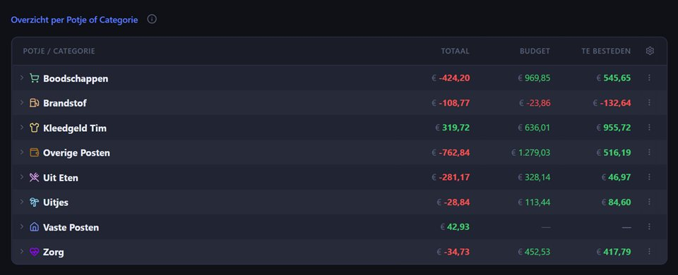
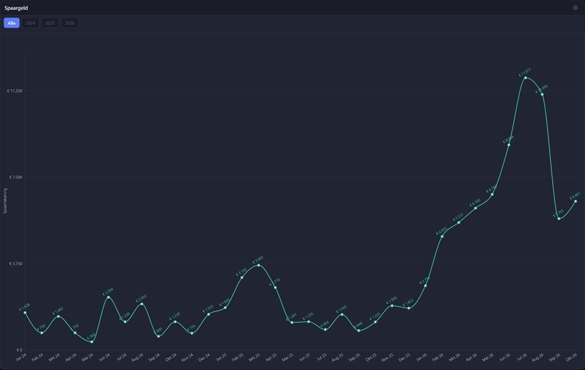
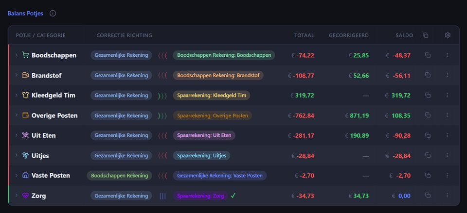
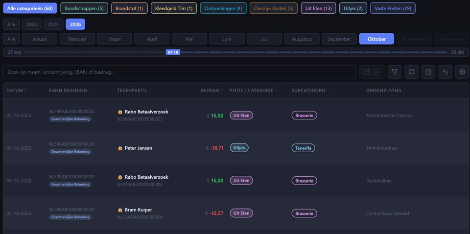
Inlezen, indelen, inzicht
Inlezen. Je downloadt je bankafschriften bij je bank en sleept ze in FBS.
Indelen. Je geeft elke boeking een categorie. Wat je één keer indeelt, herkent FBS de volgende keer vanzelf.
Inzicht. Per maand en per categorie zie je waar je geld heen gaat, en hoe dat zich over de maanden ontwikkelt.
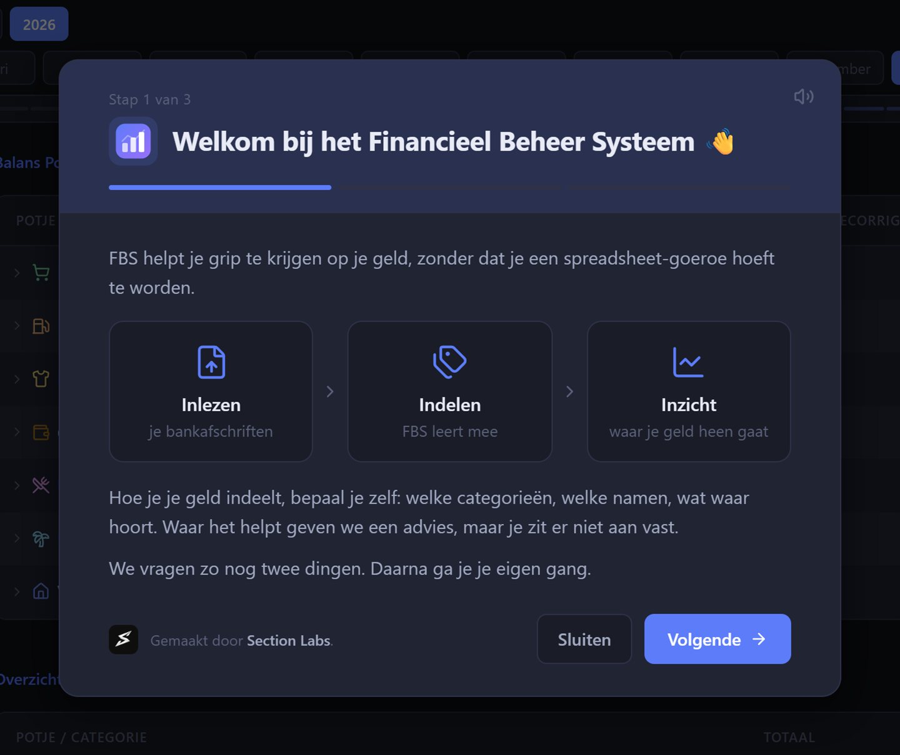
Twee manieren van werken
Bij de eerste start kies je hoe je met FBS wilt werken. Overstappen kan altijd, je gegevens blijven staan.
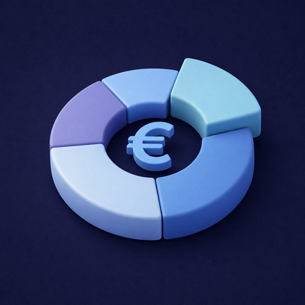
Uitgavenbeheer Ons advies om mee te beginnen
Je begint met het inlezen van je bankafschriften en het indelen van je boekingen. De eerste keer is dat het meeste werk. Daarna wordt het elke maand vanzelf minder, want wat je één keer indeelt, herkent FBS de volgende keer zelf. Die keuzes bewaart FBS als categorisatieregels, die je altijd nog kunt bijstellen.
Zodra je al je boekingen hebt ingedeeld, zie je op het Dashboard per categorie waar je geld heen ging, en bij Vaste Posten welke vaste lasten er nog komen. Bij Trends zie je hoe je uitgaven zich over de maanden ontwikkelen. Wil je later vooruit plannen, dan heb je zo meteen de bedragen om mee te beginnen.
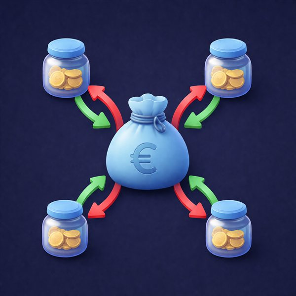
Budgetbeheer
Met wat je bij Uitgavenbeheer over je uitgaven hebt geleerd, ga je je geld vooruit verdelen over potjes. Je maakt ze één keer aan, het liefst ook als spaarpotjes bij je bank, en koppelt elk potje aan een rekening. Een periodieke overboeking op je maand start dag vult ze daarna elke maand vanzelf.
Elke maand lees je je bankafschriften in, ook die van je spaarrekening, en deel je je boekingen in. Zodra je alles hebt ingedeeld, laat de tabel Balans Potjes op het Dashboard per potje zien of het geld op de goede rekening staat. Heb je een uitgave die bij een potje hoort met je betaalrekening betaald, dan zie je daar hoeveel je van dat potje naar je betaalrekening moet overboeken. Aan het eind van de maand sluit je hem af.
Klinkt dit als veel? Dat hoeft het niet te zijn. In FBS zelf word je stap voor stap meegenomen: het welkomstscherm, de wegwijs-hulp en de tips leggen alles uit op het moment dat je het nodig hebt.
Een rondleiding door FBS
Je maand in één oogopslag
De tabel Overzicht per Categorie laat zien wat er deze maand per categorie uitging. Klap een regel open en je ziet de boekingen eronder. In Budgetbeheer heet hij Overzicht per Potje of Categorie en staan je budgetten ernaast, met wat er nog te besteden is.
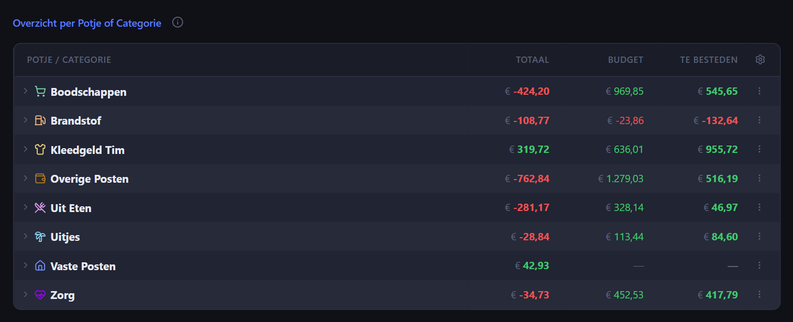
De tabel Balans Potjes laat zien hoeveel je van een potje naar je betaalrekening moet overboeken als je een uitgave die bij dat potje hoort met je betaalrekening hebt betaald. Is de maand helemaal ingedeeld, dan sluit je hem af.
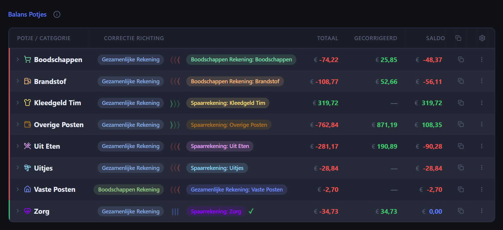
Vaste lasten in de gaten
Huur, verzekeringen, abonnementen: FBS weet welke er elke maand horen te komen en laat zien welke nog ontbreken. Wijkt een bedrag af van eerdere maanden, dan zie je dat meteen.
In Budgetbeheer rekent de Budgetadviseur hier uit of je budgetten nog kloppen met wat er werkelijk binnenkomt en uitgaat.
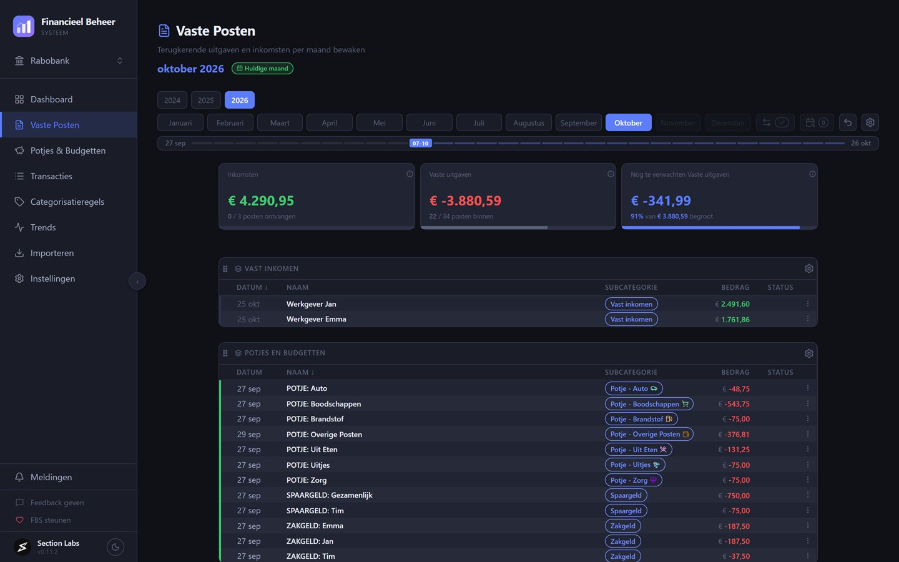
Potjes die kloppen met de werkelijkheid
Zet geld opzij voor de auto, de boodschappen of een uitje, op een spaarrekening of alleen op papier. FBS houdt bij wat er werkelijk in zit en waar het begin deze maand stond.
Heb je de potjes ook bij je bank aangemaakt, dan koppelt FBS ze vanzelf aan die rekening.
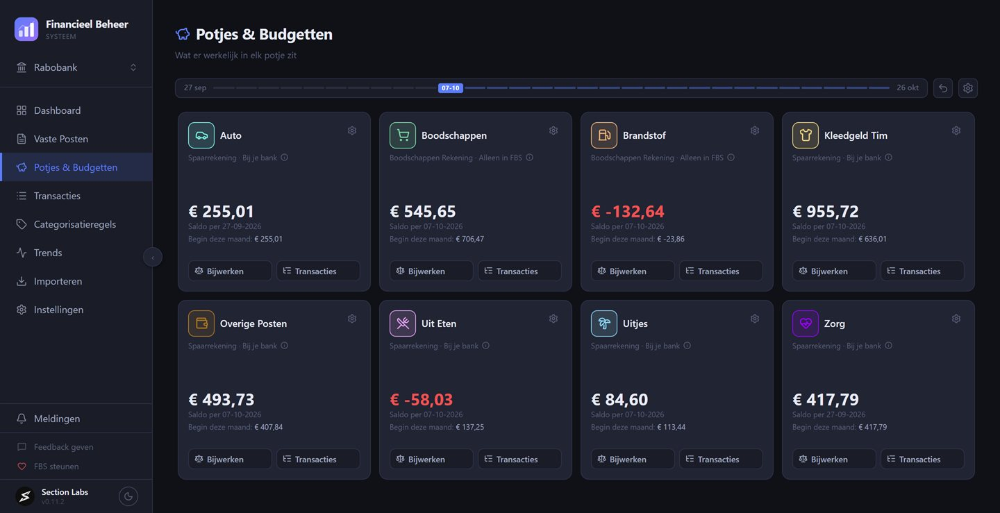
Al je boekingen, ingedeeld
Alle boekingen per maand, te doorzoeken op naam, omschrijving, IBAN of bedrag. Klik een boeking aan om hem in te delen.
Zitten er in één afschrijving verschillende soorten uitgaven, zoals bij een creditcard, dan splits je hem over meer categorieën.
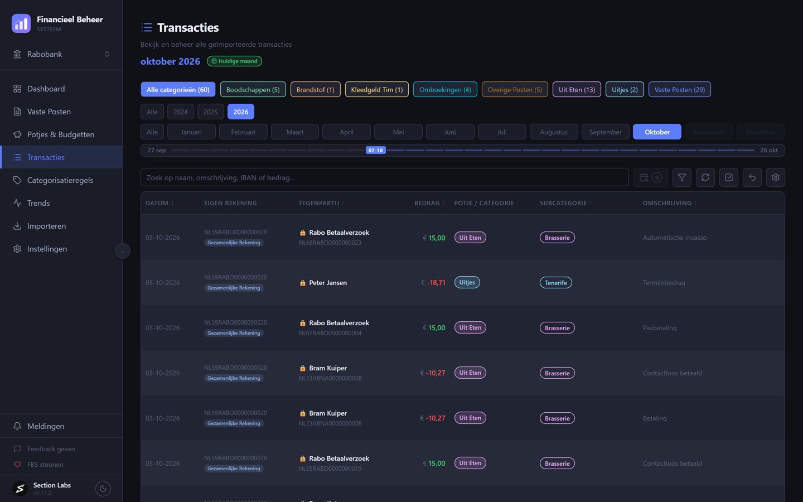
FBS leert mee
Elke keer dat je een boeking indeelt, onthoudt FBS dat als regel. Hier staan al die regels bij elkaar: op de naam van de tegenpartij, op een rekeningnummer of op woorden in de omschrijving.
Je ziet ook wanneer een regel voor het laatst iets heeft ingedeeld, zodat je oude regels makkelijk opruimt.
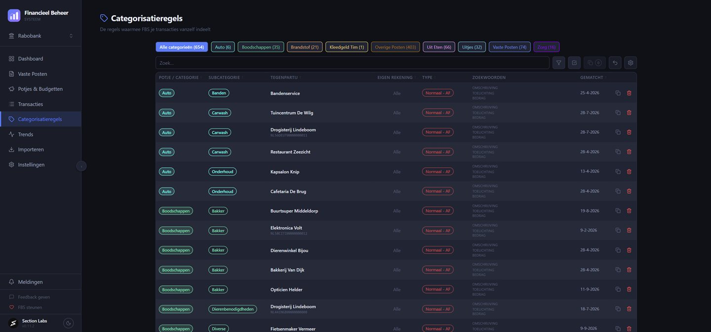
Hoe het zich ontwikkelt
Saldo, uitgaven en inkomsten door de tijd heen, per maand of per jaar.
Met Grafieken indelen stel je zelf samen welke grafieken je ziet en welke potjes, categorieën of rekeningen erin staan.
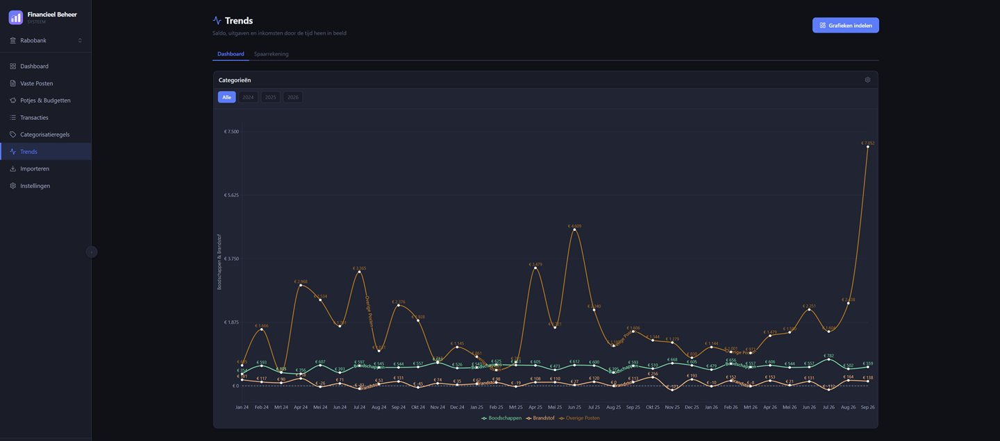
Je bankafschriften inlezen
Download je bankafschriften bij je bank en sleep het bestand in het vak. Je bank wordt herkend, en boekingen die je al had worden overgeslagen. Mist er een stuk tussen twee imports, dan meldt FBS dat.
Weet je niet waar je ze downloadt? De knop Downloaden brengt je naar de juiste pagina van je bank.
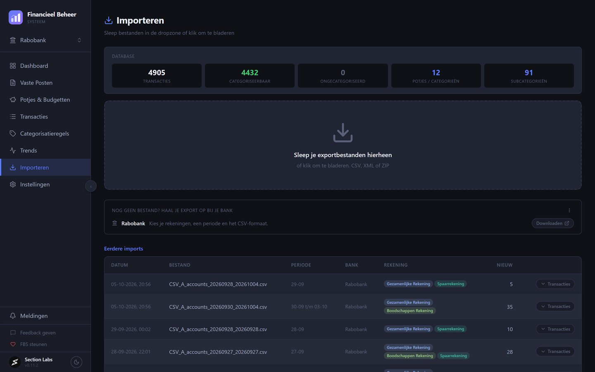
Hulp onderweg
Wegwijs
Na het welkomstscherm wijst een balk onderin je scherm stap voor stap de weg: wat je doet, en op welke pagina.
Tips
Ruim vijftig korte tips, elk bij de pagina waar ze over gaan. Hoe vaak je er een ziet, stel je zelf in.
Uitleg bij elk onderdeel
Achter het informatieteken bij tabellen, kaarten en instellingen staat wat een onderdeel doet.
Verteller
Liever luisteren? De verteller leest het welkomstscherm, de wegwijs-hulp en de tips voor, met een stem van je eigen computer. Er gaat geen tekst naar buiten.
Meldingen
Herinneringen die je zelf zet, seintjes bij het importeren, en een waarschuwing als er boekingen ontbreken tussen twee imports.
Feedback geven
Loop je ergens tegenaan of heb je een idee, dan stuur je dat vanuit FBS zelf, met een screenshot of een korte opname erbij.
Welke banken werken met FBS?
FBS leest de bankafschriften van de meeste Nederlandse banken. Met echte bestanden getest zijn Rabobank en ABN AMRO; de andere zijn ingesteld volgens de openbare beschrijving van hun bestand.
Rabobank
GetestDownload je transacties als CSV.
ABN AMRO
GetestKies bij het downloaden van je afschrift voor CAMT.053.
Ook ondersteund
ING, ASN Bank, SNS, RegioBank, Knab en bunq.
Ingesteld volgens de openbare beschrijving van het bestand van deze banken, maar nog niet getest met een echt bestand.
Nieuw in deze versie
Je gegevens blijven bij jou
Geen cloud
Er gaat niets naar een dienst van iemand anders. Je gegevens staan op je eigen computer. Alleen als jij ervoor kiest, gaat er iets naar buiten: een back-up naar je eigen cloudmap, of feedback die je zelf verstuurt.
Geen koppeling met je bank
FBS leest alleen de bankafschriften die je zelf bij je bank downloadt. Het logt nergens voor je in.
Zelf back-ups
FBS maakt bij het starten en afsluiten zelf een back-up. Een tweede kopie kan naar een map die jij kiest, zoals een USB-stick, je NAS of je eigen cloudmap, desgewenst versleuteld met een wachtwoord.
Download FBS
Windows
Windows 10 of 11, 64-bit. Getest op Windows 11. Voer het gedownloade installatiebestand uit.
macOS
macOS 15 (Sequoia) of nieuwer, voor Intel en Apple Silicon. Getest op macOS 15 en 26. Open het gedownloade schijfbestand en sleep FBS naar Programma's.
Systeemeisen
- Scherm: minimaal 1280 × 720Een hogere schaal van je computer of zoom in FBS maakt de ruimte kleiner: 1920 × 1080 op 150% is precies de grens.
- Werkgeheugen: 4 GB is ruim genoeg.
- Schijfruimte: ongeveer 250 MB, plus ruimte voor je back-ups.
Updates
Je hoeft niets meer te downloaden. FBS meldt zelf wanneer er een nieuwe versie is en werkt zichzelf bij.
Een waarschuwing bij het downloaden of installeren?
Waar gaat de waarschuwing over? Windows en macOS kijken of een programma is ondertekend: een digitale handtekening waarmee de maker aantoont wie hij is. FBS heeft die nog niet. Je computer kan dus niet controleren wie het bestand gemaakt heeft, en waarschuwt daarom. Het betekent niet dat er een virus of iets anders verdachts in het bestand is gevonden. Meldt je browser dat het bestand niet vaak wordt gedownload, dan komt dat doordat FBS nog nieuw is.
Waarom nog geen handtekening? FBS wordt gemaakt door één ontwikkelaar. Een handtekening kost geld: voor de Mac ongeveer honderd euro per jaar, voor Windows honderd tot een paar honderd euro per jaar. Dat loont nu nog niet, maar het staat op de planning voor als FBS groeit.
Wat moet je doen?
Windows
- Zegt je browser dat het bestand niet vaak wordt gedownload? Ga in het downloadoverzicht met de muis over het bestand, klik op de drie puntjes en kies Behouden. Volgt er nog een venster van Microsoft Defender SmartScreen, klik dan op het pijltje naast Verwijderen en kies Toch behouden.
- Open het gedownloade installatiebestand.
- Verschijnt er een blauw scherm met Windows heeft uw pc beschermd? Klik op Meer informatie en daarna op Toch uitvoeren.
- Volg de stappen van het installatieprogramma. Daarna staat FBS in het startmenu.
macOS
- Open het gedownloade schijfbestand en sleep FBS naar Programma's.
- Open FBS vanuit Programma's. De eerste keer meldt macOS dat het de app niet kan controleren. Klik die melding weg.
- Open de Systeeminstellingen, ga naar Privacy en beveiliging en scrol naar beneden. Daar staat een melding over FBS met een knop om de app toch te openen. Klik daarop en bevestig.
- Vanaf nu opent FBS gewoon.
Dit hoeft maar één keer. Download FBS alleen via deze pagina of via GitHub, dan weet je zeker dat je het echte bestand hebt.
Veelgestelde vragen
Is FBS echt gratis?
Ja. Geen abonnement, geen advertenties en geen betaalde versie met meer mogelijkheden. Wil je de ontwikkeling steunen, dan kan dat met een vrijwillige bijdrage.
Werkt FBS op mijn telefoon of tablet?
Nee. FBS is een programma voor de computer, voor Windows en macOS. Een versie voor telefoon of tablet is er niet.
Waar staan mijn gegevens?
In een map op je eigen computer, samen met de interne back-ups. Op Windows is dat %LOCALAPPDATA%\FBS\gegevens, op de Mac Library/Application Support/nl.sectionlabs.fbs/gegevens in je thuismap. Library heet in een Nederlandse Finder Bibliotheek en is standaard verborgen; je komt er het snelst via Ga naar map (Shift-Command-G). FBS stuurt je financiële gegevens nergens heen: niet naar ons, niet naar een cloud en niet naar je bank.
Hoe zit het met back-ups?
Automatisch: FBS maakt bij het starten en afsluiten zelf een interne back-up op je computer. Daarnaast kan het een externe back-up wegschrijven naar een map die jij kiest, bijvoorbeeld een USB-stick, je NAS of een map van je eigen cloudopslag, desgewenst versleuteld met een wachtwoord. Die externe back-up houdt zichzelf bij: was de map even niet bereikbaar, dan kopieert FBS de volgende keer wat er nog ontbreekt. De interne back-up staat op dezelfde computer als je gegevens: gaat die computer stuk, dan ben je hem ook kwijt. Zet daarom ook een externe back-up aan.
Zelf, op elk moment: bij Instellingen, tabblad Systeem, onder Back-up & herstel, maakt de knop Download backup direct een volledige back-up die je opslaat waar je wilt. Handig vlak voordat je iets groots verandert.
Terugzetten doe je op dezelfde plek in de app.
Ik stap over op een nieuwe computer. Hoe neem ik alles mee?
Installeer FBS op de nieuwe computer. Gebruikte je een externe back-up, kies dan bij Instellingen, tabblad Systeem, onder Back-up & herstel dezelfde map als Locatie. Zolang de nieuwe administratie nog leeg is, meldt FBS binnen een paar minuten Back-up van een ander apparaat gevonden, met de naam van je oude computer. Klik op Terugzetten en je gaat verder waar je was.
Geen externe back-up? Maak dan op de oude computer een back-up met Download backup en zet die op dezelfde plek op de nieuwe computer terug. Was de back-up versleuteld, houd dan het wachtwoord of de herstelsleutel van de oude computer bij de hand.
Kan ik meer dan één administratie bijhouden?
Ja, bijvoorbeeld je eigen geld en dat van een ouder die je helpt. Elke administratie heeft eigen gegevens en eigen back-ups. Je wisselt ertussen bovenin de zijbalk; een nieuwe maak je bij Instellingen, tabblad Database, met + Administratie toevoegen.
Moet ik zelf nieuwe versies downloaden?
Nee. FBS meldt zelf wanneer er een nieuwe versie is en werkt zichzelf bij.
Hoe verwijder ik FBS?
Windows: verwijder FBS zoals elk ander programma, via de lijst met geïnstalleerde apps in de instellingen van Windows. Je gegevens blijven daarbij standaard staan, zodat een nieuwe installatie ze terugvindt. Wil je alles wissen, vink dan tijdens het verwijderen App-gegevens verwijderen aan; FBS vraagt daarna nog één keer of je het zeker weet.
macOS: sleep FBS uit Programma's naar de prullenmand. Je gegevens blijven staan in de map Library/Application Support/nl.sectionlabs.fbs in je thuismap (in Finder heet Library Bibliotheek); gooi die ook weg als je alles wilt wissen.
Back-ups die je zelf naar een andere map hebt laten schrijven, blijven in beide gevallen staan.
Werkt FBS met mijn bank?
FBS leest de bankafschriften van Rabobank, ABN AMRO, ING, ASN Bank, SNS, RegioBank, Knab en bunq. Met echte bestanden getest zijn Rabobank en ABN AMRO; de andere zijn ingesteld volgens de openbare beschrijving van hun bestand, maar nog niet getest met een echt bestand. Staat je bank er niet bij maar biedt hij CAMT.053 aan, dan kun je het proberen. Zie Welke banken werken met FBS?
Ik heb een vraag, een idee of vond een fout.
Gebruik Feedback geven, onderin de zijbalk van FBS. Kies of het om een probleem, een idee of een vraag gaat en beschrijf het in je eigen woorden. Je kunt er meteen een screenshot of een korte opname van je scherm bij maken, of een bestand toevoegen. Persoonlijke gegevens worden daarin standaard afgeschermd, en jij bepaalt wat zichtbaar blijft. De versie van FBS, je systeem en de pagina waar je was stuurt FBS zelf mee. Wil je een antwoord, vul dan je e-mailadres in.
De ontwikkeling van FBS steunen
FBS is gratis. Wil je bijdragen aan de verdere ontwikkeling, dan kan dat met een vrijwillige bijdrage. Je kiest zelf het bedrag.
Waar een bijdrage bijvoorbeeld naartoe gaat:
- FBS laten ondertekenen voor Windows en macOS, zodat je computer kan zien van wie FBS komt en de waarschuwing bij het installeren verdwijnt.
- Verder bouwen aan nieuwe functies en aan verbeteringen die gebruikers via de feedback aandragen.
Je betaalt met iDEAL of een betaalkaart. FBS werkt precies hetzelfde met of zonder bijdrage.